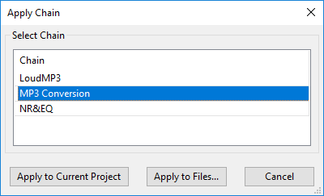

Apply Chain
- Accessed by:
- 
Select Chain
In the "Chain" list, left-click (or use Up or Down arrow on the keyboard) to select the Chain you want to apply.
Apply to Current Project
Apply the selected Chain to the current project window.
The effects in the Chain are applied to the selected region of waveform in the selected audio tracks. Usually the selected Chain would not include an export command so as to use the greater flexibility of the Export Audio Dialog.
If an export command is included in the Chain, the entire project audio is exported irrespective of track or region selection. Therefore if the project contains multiple audio tracks, they will be mixed together, unless any of the tracks are muted on the Track Control Panel.
The exported files will be saved in a folder named "cleaned".
- If the audio in the project came from an imported file or files, the "cleaned" folder will be inside the directory from which the first file was imported. The original files are not altered.
- Otherwise, a message prompt will indicate the location of the "cleaned" folder that will contain the exported file. The "cleaned" folder will be in the last location that the Chain process exported to. If the Chain process has never been used for export before, the "cleaned" folder will be in the location at which the File Export Dialog currently opens.
Apply to Files...
Apply the selected Chain to selected external audio files that are in a single directory. If you already have audio in the current project window, you must save and close that project using before applying a Chain to files.
| It is recommended not to process more than 500 files at a time. |
- A standard File Open dialog box will appear. Choose a directory then you can select one or any number of supported audio files in that directory, but not Audacity AUP project files. You cannot select files outside that directory, and files in folders inside that directory will not be processed. It is convenient therefore to first put all the audio files you want to process into one folder before applying the Chain.
- After selecting the audio files you want to process, choose "Open".
- Each file will be imported into Audacity and processed, exported to the format you chose in the Chain, then the processed audio will be removed so as to clear the temporary disk space that had been used.
- The exported files will be saved in a folder named "cleaned" in the same folder that the original files came from. The original files are not altered.
| You cannot process multi-channel audio files (for example, 5.1 surround sound files) using Chains, even if Import / Export Preferences has been set to "Use custom mix". Any multi-channel files you import will be mixed down on export. |